Checks and limits
| Check | Result | Evidence |
|---|---|---|
| Repository gate | Pass | 5,163 tests: editor 4,086, workspace-tree 534, frontend-router 207, scripts 336. Workspace typechecks, lint and guard freshness pass. The 108 focused component, keyboard, theme and auth tests also pass; they are a subset of the gate. |
| CI and preview | Pass | Typecheck/Test/Build, E2E Smoke, repo guards and PR Preview pass. Preview smoke, auth routes, video routes and critical flows pass. Preview deployment run. |
| Upload cancellation | Pass | Home and picker use quiet cancellation triggers. Keep uploading preserves the pending upload; confirmed cancellation removes it. Real upload-session POST returned 201, node DELETE returned 200 and read-back confirmed removal. Only the media transport was held to expose the intermediate state. |
| Deletion | Pass | Video and contact confirmations show flat outline cancellation and filled danger confirmation. Contacts selected-row trigger uses quiet danger. A synthetic contact was created through the form, read back, deleted through the UI and confirmed absent. |
| Teams CTA | Pass | Both sections use the existing gold variant. Independent inspection at 1280 and 390 CSS pixels found no horizontal overflow. Phone labels wrap within both buttons. |
| Shared defaults | Pass | Contact-us submission uses shared default styling. Consent-disabled state and phone layout inspected. Admin sortable headings and active filters use shared ghost defaults in source and regression checks. |
| Control consolidation | Pass | Contacts add/remove fields work by keyboard. Editor Alt+F10 reaches its toolbar; Tab preserves the toolbar and visible focus at desktop and phone widths. Media controls expose Edit video, Replace and Remove names. Existing seeded page data stayed unchanged. |
| Navigation | Pass | SSO controls are native anchors with encoded redirectTo preserved. Phone tiles measure 48 pixels high. Disabled navigation has focused regression coverage. |
| Ratchets and inventory | Pass | CSS and LOC ratchets pass; suppression baselines shrink. Inventory regenerated: 24 ui modules, 379 components, 171 Button uses, 61 ButtonBase uses and 4 styled navigation controls. Unused paint-axis removal preserves the previously checked 780 class combinations. |
| Independent review | Pass | Source review found no product blockers. Independent runtime checks cover the Teams, SSO and editor states above. Security scan found unchanged HTML-rendering comment references and static marketing URL candidates; auth and billing mutation policy did not change. |
| Live admin table | Limited | Configured admin password login returned 401. No live admin sorting/filter interaction is claimed. Source and regression checks cover the approved default-style replacement. |
| External side effects | Not exercised | No external SSO handoff, contact-us message or live payment-card removal was attempted. Billing control presentation and unchanged mutation logic were reviewed in source; the preview had no populated card to remove. |
| Browser diagnostics | Recovered | The shared native browser restarted and lost authentication during the run. A fresh native tab and reauthentication restored checks at the same SHA. One portal focus warning was observed during a transition. Blank or transiently clipped captures were excluded. |
| Fixture cleanup | Pass | Final API read-back returned 200 with zero temporary root videos, zero contacts and zero pending uploads. Seeded fixtures were preserved. No production or staging operations were run. |
Approved before and after
These are the earlier decision artifacts, not screenshots retaken on this preview. They preserve the approved visual comparisons.
Real preview screens
All images use synthetic test data, seeded fixtures or public marketing content. Phone checks use a 390-pixel CSS viewport in the desktop browser, not a physical-device test.

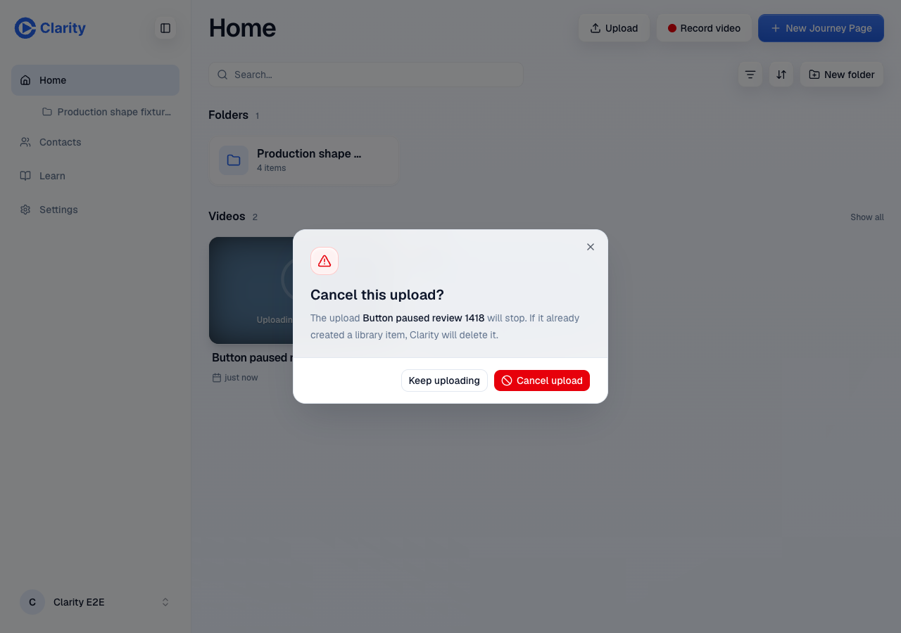
Home upload confirmation
Keep uploading is flat; the final cancellation is filled danger.
/home

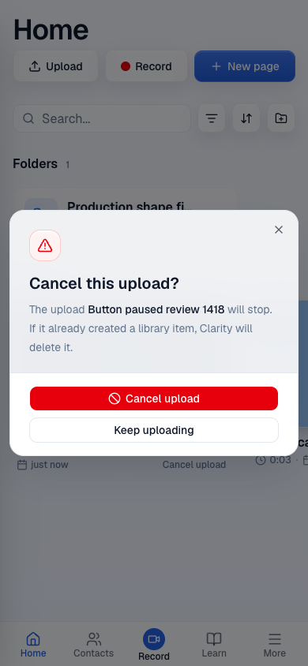
Home upload confirmation on phone
The same confirmation fits the phone viewport.
/home

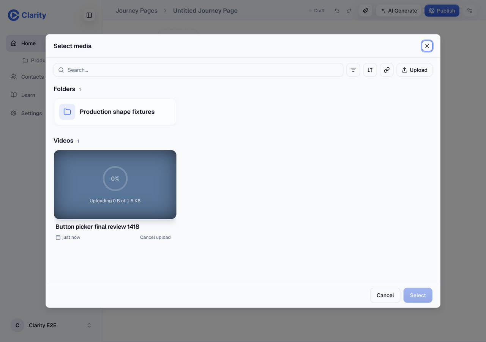
Media picker upload card
Cancel upload uses the quieter shared variant. The pending card has no nested button.
/new

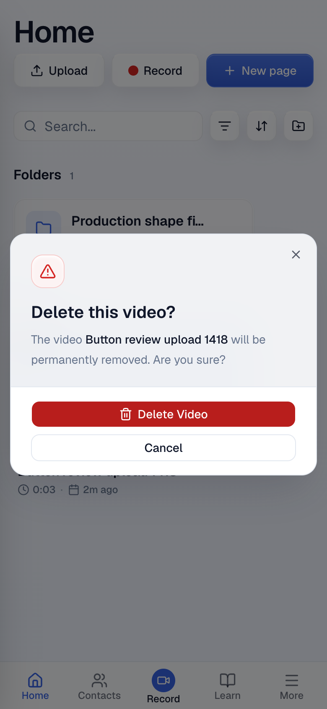
Video deletion on phone
Flat neutral cancellation and filled danger confirmation.
/home

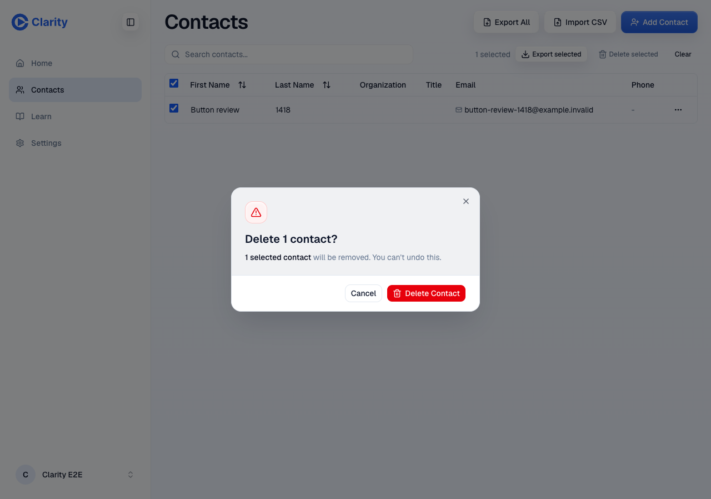
Contacts deletion
Selected-row trigger and shared confirmation with the synthetic test contact.
/contacts

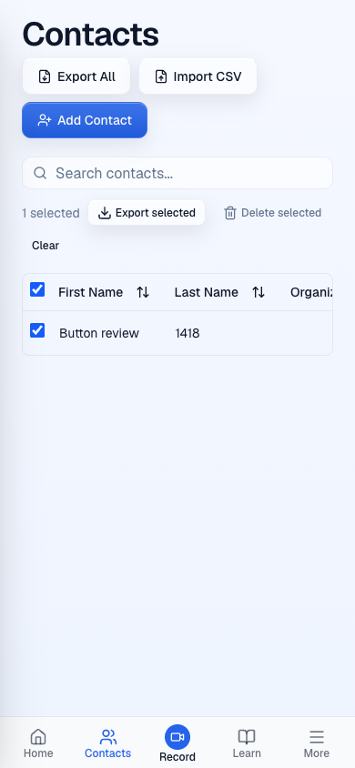
Contacts selected-row actions on phone
Delete selected uses quiet danger. The table scrolls within its container.
/contacts

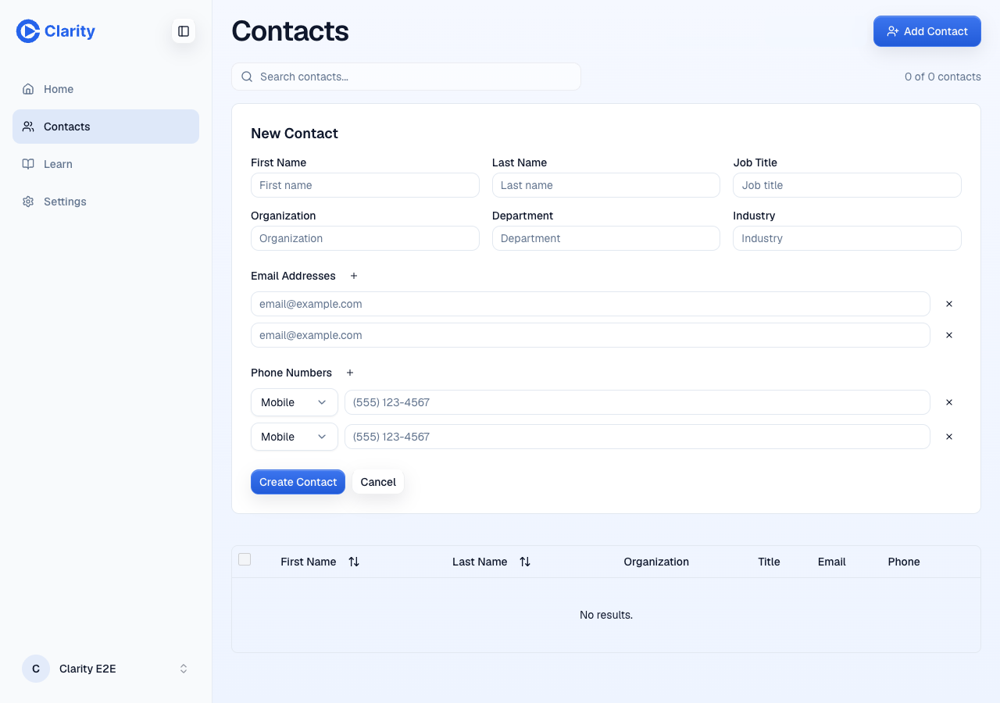
Contacts add/remove fields
Shared compact controls add and remove email and phone fields by keyboard.
/contacts

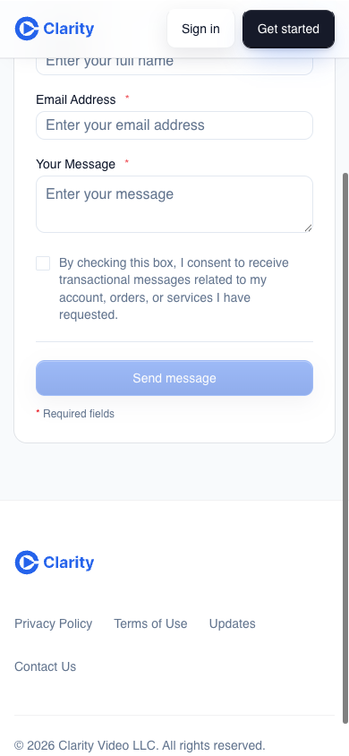
Contact-us submission
Shared default button with consent disabled. No message was sent.
/contact-us

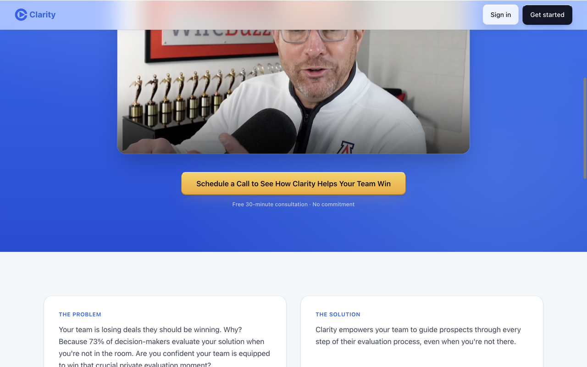
Teams hero CTA
Existing gold CTA at desktop width.
/teams

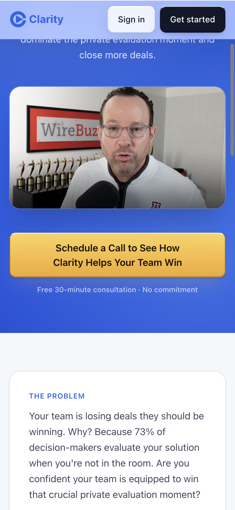
Teams hero CTA on phone
Gold CTA label wraps inside the button.
/teams

Teams closing CTA on phone
The closing section uses the same gold treatment.
/teams

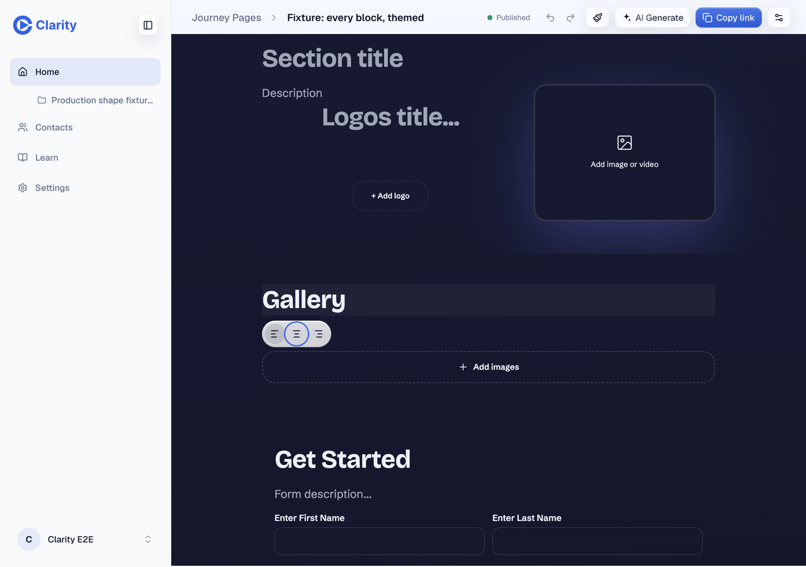
Editor toolbar on desktop
Alt+F10 enters the toolbar. Tab reaches Center and preserves focus visibility.
/edit/e300555e-6ee9-5dda-aecb-26f50e242a73

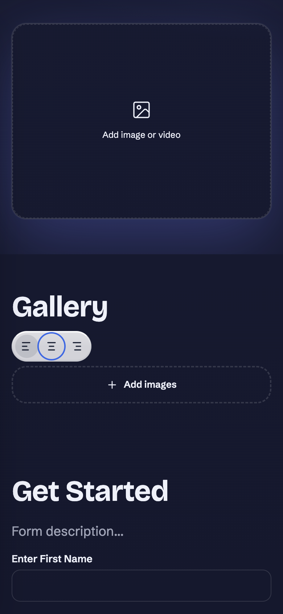
Editor toolbar on phone
Center remains keyboard focused after Alt+F10 and Tab. Seeded content was unchanged.
/edit/e300555e-6ee9-5dda-aecb-26f50e242a73
Console and network
The screenshots come from the deployed app. API responses proved that upload sessions and contact changes were wired to the preview backend. Controlled media PUT requests were intentionally aborted during cancellation. Cleanup reads returned 200. Browser restart errors and authentication 401s were recovered before completing the affected checks; the extra admin login 401 remains a documented limitation.
Independent screenshots reported no console or network failures on Teams, login and the editor before the browser restart. This report does not claim a globally empty console history. The deployment initially hit a Cloudflare secret-write 504; rerunning the failed CI job completed successfully without a code change.
Scope and handoff
The approved button cleanup is ready for code review. The broader component-library review remains open on issue 1380. This report supports the scoped PR and records the untested adjacent flows above. Production and staging have not been changed.
Independent artifact audit passed. All 13 images and captions were inspected; public files contain only approved screenshots, this report and the app font.